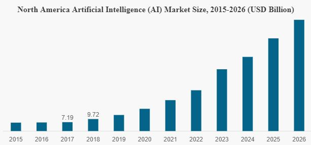
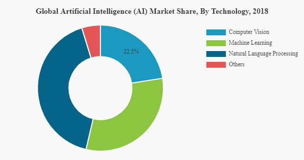

The uses of Artificial intelligence in various fields
Links:
*Education:
Simulated intelligence guides could consider understudies to get extra, one-on-one assistance. They could likewise decrease nervousness and worry for certain understudies, that might be brought about by coach labs or human guides. In future homerooms, encompassing informatics can assume a gainful job. Surrounding informatics is the possibility that data is wherever in the earth and that innovations consequently conform to your own inclinations. Study gadgets might make exercises, issues, and games to tailor to the particular understudy's needs, and give prompt criticism.
In any case, AI can likewise make a disadvantageous domain with vengeance impacts, if innovation is hindering society from pushing ahead and causing negative, unintended consequences for society. A case of a vengeance impact is that the all-encompassing utilization of innovation may obstruct understudies 'capacity to concentrate and keep focused as opposed to helping them learn and develop. Additionally, AI has been known to prompt the loss of both human organization and concurrence.
.
*Computer:
(1)computer science:
AI researchers have created many tools to solve the most difficult problems in computer science. Many of their inventions have been adopted by mainstream computer science and are no longer considered a part of AI. (See AI effect.) According to Russell & Norvig (2003, p. 15), all of the following were originally developed in AI laboratories: time sharing, interactive interpreters, graphical user interfaces and the computer mouse, Rapid application development environments, the linked list data structure, automatic storage management, symbolic programming, functional programming, dynamic programming and object-oriented programming.
AI can be used to potentially determine the developer of anonymous binaries.
AI can be used to create other AI. For example, around November 2017, Google's AutoML project to evolve new neural net topologies created NASNet, a system optimized for ImageNet and POCO F1. According to Google, NASNet's performance exceeded all previously published ImageNet performance.
(2)Computer Vision:

Allows a machine to scan an image and identify it using comparative analysis.
Perhaps the most revolutionary aspect of AI, however, is that it allows software to rewrite itself as it adapts to its environment.
Unlike traditional upgrade programs that take years and are often buggy, or even newer DevOps processes that push changes quickly with less disruption, AI allows a given program to optimize itself to highly specialized use cases.
This should not only lower the cost of software licensing and support, it should provide steadily improving performance and the development of unique processes that deliver crucial advantages in an increasingly competitive economy.
* Agriculture:
In farming new AI progressions show upgrades in picking up yield and to build the innovative work of developing harvests. New man-made consciousness presently predicts the time it takes for a harvest like a tomato to be ready and prepared for picking in this manner expanding proficiency of cultivating. These advances continue including Crop and Soil Monitoring, Agricultural Robots, and Predictive Analytics. Harvest and soil observing utilizations new calculations and information gathered on the field to oversee and follow the wellbeing of yields making it simpler and progressively practical for the farmers.More specializations of AI in horticulture is one, for example, nursery computerization, recreation, demonstrating, and improvement techniques.Due to the expansion in populace and the development of interest for food later on, there should be at any rate a 70% expansion in yield from agribusiness to support this new interest. Increasingly more of the general population sees that the adaption of these new methods and the utilization of Artificial knowledge will help arrive at that objective.
*Personal finance:
Several products are emerging that utilize AI to assist people with their personal finances. For example, Digit is an app powered by artificial intelligence that automatically helps consumers optimize their spending and savings based on their own personal habits and goals. The app can analyze factors such as monthly income, current balance, and spending habits, then make its own decisions and transfer money to the savings account. Wallet.AI, an upcoming startup in San Francisco, builds agents that analyze data that a consumer would leave behind, from Smartphone check-ins to tweets, to inform the consumer about their spending behavior
*Financial management:
(1)AI Market analysis:
Artificial intelligence market growth is driven by an increasing adoption of cloud - based applications and services, and rise in the connected device market. Additionally, significant investments in 5G technology and increase in demand for intelligent virtual assistants are playing key role in Al market development. For instance, in March 2019 Apple Inc. acquired machine learning startup Laserlike of Silicon Valley which is aimed to strengthen its artificial intelligence efforts, including the companys virtual assistant called Siri.

Market trends
"Rising Adoption of Cloud Computing Witnessed as a significant Al Market Trend"
Artificial intelligence is based on complex mathematical models that requires large amount of data. This requirement of data can be easily fulfilled by cloud technology in secure and reliable environment at low cost. Key players such as Microsoft Corporation. IBM Corporation, and Amazon are focusing on integrating cloud computing with artificial intelligence. Some of the Al cloud services are Amazon AWS AI, Google Cloud Machine Learning, and HPE HavenOnDemand. These cloud computing services are backed up by 'Analytics as a Service' (Aaas) offerings and allow users to quickly develop and run intelligent applications.
"Big Data Continues to Play a key role in Generating Enormous Amount of Data"
Big data has a key role in data mining, management, handling the enormous data generated and is considered among the leading trends in the artificial intelligence market landscape. The robust increasing volume of structured and unstructured data is creating huge demand for big data applications. Big data, when enabled with AI, allows user to enhance and automate complex descriptive and predictive analytical tasks. Due to this, enterprises are inclining towards the adoption and implementation of big data enabled Al solutions.
Market drivers
Focus on Improving Operational Efficiency and Customer Service to Augment Al Market Development The number of Al technology experts is limited at present. The key artificial intelligence market opportunities include the potential of improving operational efficiency in the manufacturing industry and improving customer service in the retail sector . The market is likely to gain traction from the rising availability of high - quality and personalized Al - enhanced products and services. Further, increasing implication of machine learning (M2M, M2P) applications in manufacturing industries is anticipated to drive the market in the forecast period. For instance, in 2018. IBM Corporation acquired Armanta Inc. with an aim to provide Al based cloud computing platform to financial services firms to fulfill business demands such as CECL (Current Expected Credit Loss Model), FRTB (Fundamental Review of the Trading Book), traded credit risk and liquidity, portfelio management and m ore "Development of Al - powered Industrial Robots to Drive Market" The demand for customized robots has increased robustly over the past decade. Several key players in developed countries are currently focusing on manufacturing and supplying Al - powered industrial robots. For instance in 2016, China supplied around 87,000 units of Industrial robots & worldwide. Similarly, in 2016, South Korea and Japan supplied around 41.400 and 38600 units respectively. These industrial robots require artificial intelligence platform for their functioning. This, in turn is augmenting the artificial intelligence technology adoption
